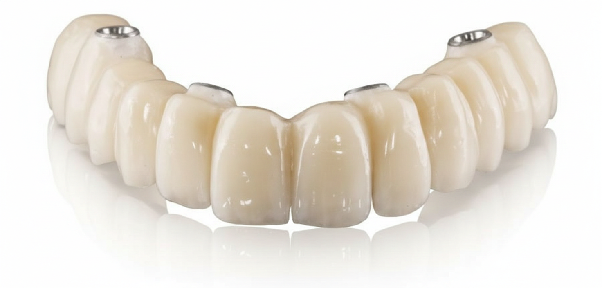

Somos un sistema totalmente abierto. Recibimos archivos .STL y .PLY de cualquier escáner intraoral (Medit, 3Shape, iTero, Shining, etc.) e integración directa vía Connect Case Center.

Zirconio Multicapa
Transición cromática dentina–esmalte. Coronas y puentes con fuerza clínica.
Cotizar →